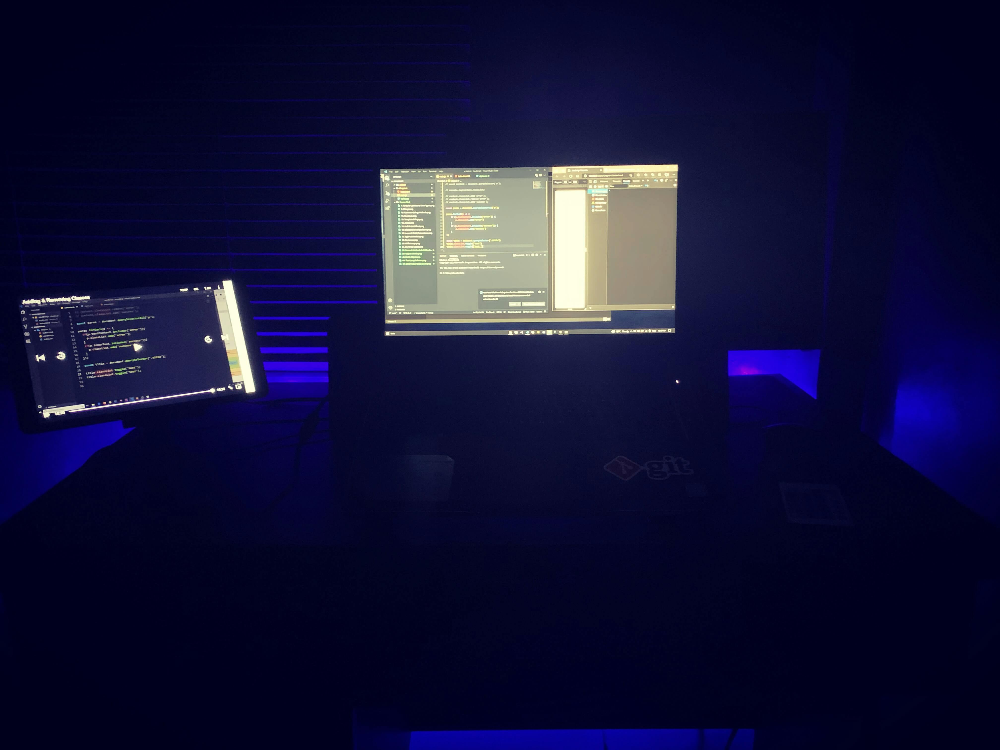
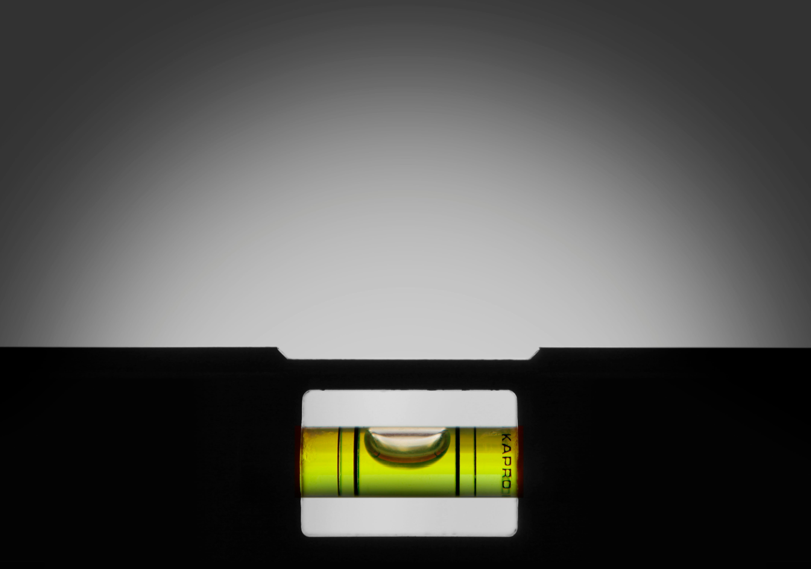
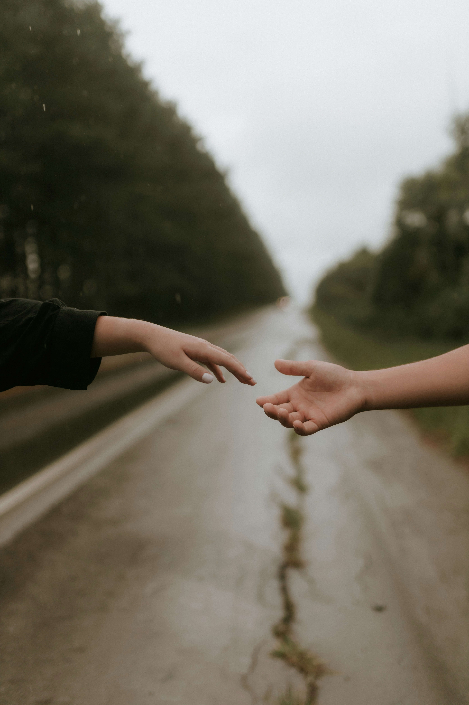
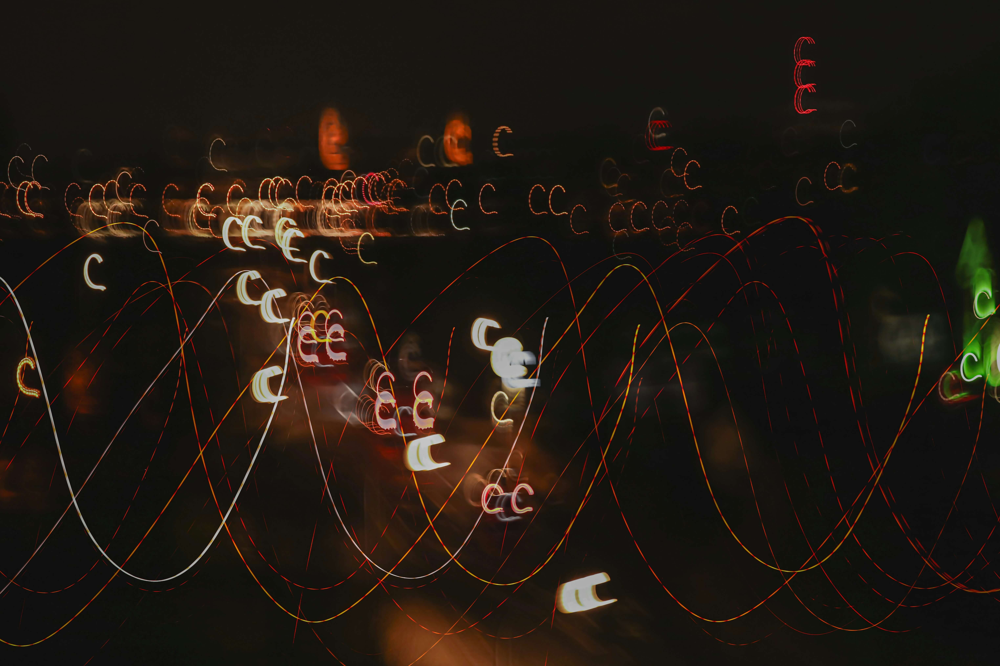
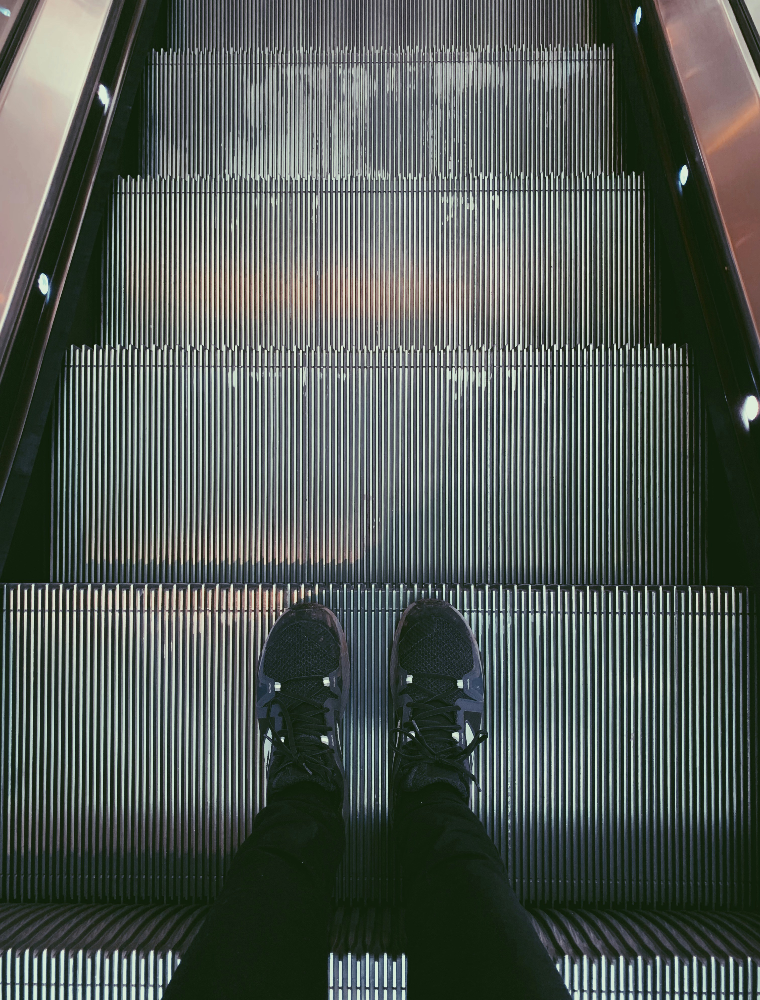

-
Фритрек и нулевой спринт: Подготовка к работе
 </HTML>
</HTML>
Это было самое начало пути. На этом этапе важно было проникнуться основами и настроиться на учёбу. И, возможно, подумать, как новые знания могут повлиять на ваше будущее.
Именно тогда я еще ничего не знал о верстке и web казался мне чем-то страшным и непонятным
-
1 спринт: Я — чистый лист
 </HTML>На первых этапах мы работали со страхами и сомнениями, которые часто испытывают новички. Один из них — страх перед чистым листом. Это, конечно же, намного сложнее, чем боязнь куска бумаги. Часто за этим ощущением скрываются более глубокие вопросы: с чего начать? а вдруг будет слишком сложно? что, если я не справлюсь?
Но поддержка команды, помощь наставника и старшего студента помогала преодолеть трудности
-
1 спринт: А если не получится?
</CSS>Первый проект — позади! Но это всё ещё самое начало пути. Радость могла быстро померкнуть и смениться ожиданием провала. Или вы, наоборот, могли вдохновиться успехами и поверить в себя.
Невероятная радость. Первый проект. Он готов. Впереди еще много интересного
-
2 спринт: Погоня за идеалом
 </desigions>На этом этапе вы уже достаточно разбирались в основах вёрстки, чтобы понять, как много ещё впереди. Вы могли попытаться погнаться за идеалом и понять, что он недостижим. А, может, вы вовсе и не подвержены перфекционизму и вместо того, чтобы сделать идеально, старались просто сделать.
Идеал недостижим. Нельзя вечно переделывать и улучшать код. Иногда надо остановиться и делать другие продукты
-
2 спринт: О тех, кто рядом
 careВсё это время вы были не одиноки (хотя, возможно, иногда и чувствовали, что одни против целого мира). Вас окружали одногруппники, команда сопровождения и просто близкие люди, которым можно пожаловаться, если очередной макет просто так не поддавался. Осваивать что-то новое легче, когда рядом есть единомышленники, не правда ли?
Но ни секунды я себя не чувствовал одиноким перед проблемами и трудностями возникающими во время учебы
-
3 спринт: Обходные стратегии
 </support>На этом курсе вы постоянно решали разные задачи. В какой-то момент вам могло показаться, что решения просто иссякли. Значит, пришло время посмотреть на задачу под другим углом.
Креатив и нестандартный подход - вот основа успеха разработчика
-
3 спринт: Когда опускаются руки
<lifes-style: none;>Во время учёбы часто возникает чувство, когда не знаешь, за что хвататься. Вроде и проектную пора сдавать, и задачи хочется порешать, и в теории получше разобраться, и жизнь не забыть пожить. В такие моменты очень нужна концентрация. Вспомните, откуда вы её черпали.
Вот оно. Выгорание. Но нужно найти в себе силы и двигаться дальше
-
«Сейчас я здесь»
 <experience>Сейчас вы уже очень много знаете о вёрстке. Но это только начало. Во-первых, впереди ещё много материала про «красотищу». Во-вторых, с окончанием курса учёба не заканчивается. Вёрстка — это целый мир. И этот мир постоянно меняется. Познать его полностью не получится, но это тот случай, когда важен сам процесс познания. Ведь часто путь — и есть результат.
Остался последний шаг. И большой этап в изучение верстки будет закончен